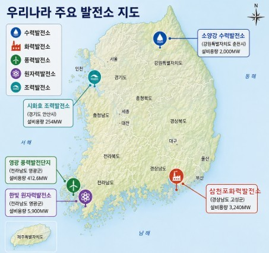

⚡ 발전소 탐방
지도의
발전소 아이콘
을 클릭해 내부를 둘러보세요!

💧
수력발전소
🌊
조력발전소
🌬️
풍력발전소
⚛️
원자력발전소
🔥
화력발전소
← 지도로 돌아가기
🔍 클릭하면 크게 보기
✕
✕
🔬 발전기의 원리
⚡ 에너지 전환 과정
취수량 조절
0 (정지)
밀물 · 썰물 선택
🌊 밀물일 때
🌊 썰물일 때
낙차 크기 선택
⬆️ 낙차 클 때
(빠른 물살)
⬇️ 낙차 작을 때
(느린 물살)